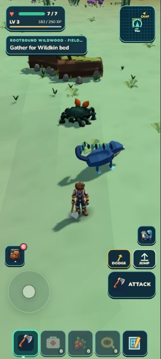
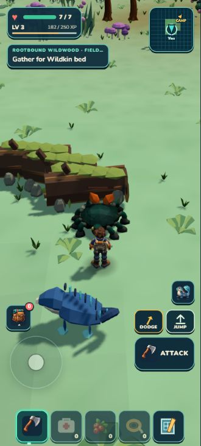
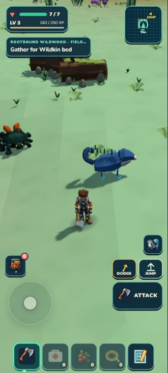

ACTUAL GAME · RETAINED PLACEHOLDER ENCOUNTER
The retained TRELLIS creature now lives beside Rootbound's root dressing. Slow roaming is readable at phone scale. Faster escape motion and precise foot placement can be refined later. All43 scenery groups and both Mossling homes remain.



1,438 tests, verify and ZIP pass. Independent review retains this as an optional observer. The broader habitat remains a blockout: the next pass strengthens connected root and vegetation shapes.
Checkpoint and limits · Independent review · Measured evidence · Developer check · Rootbound dossier